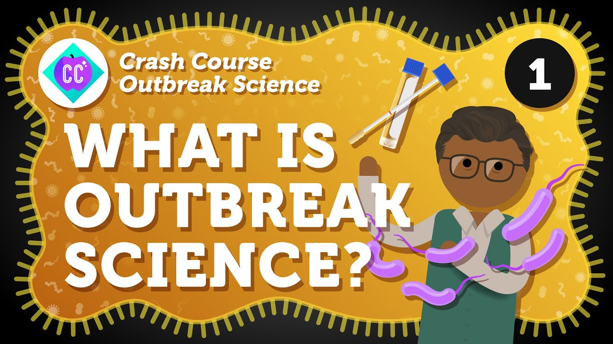
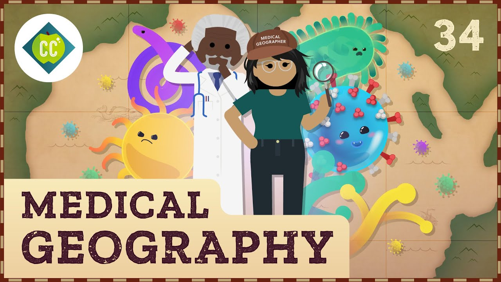
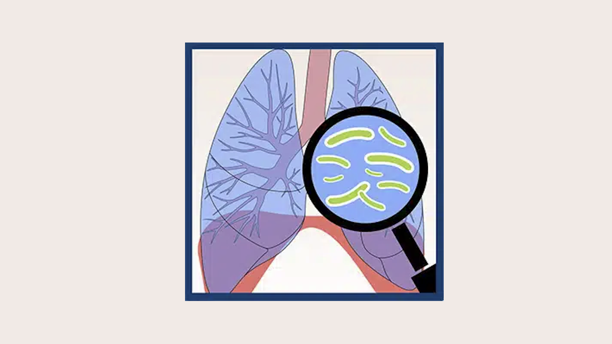
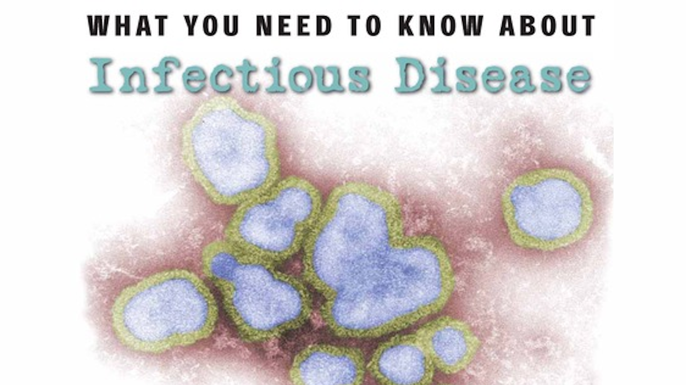
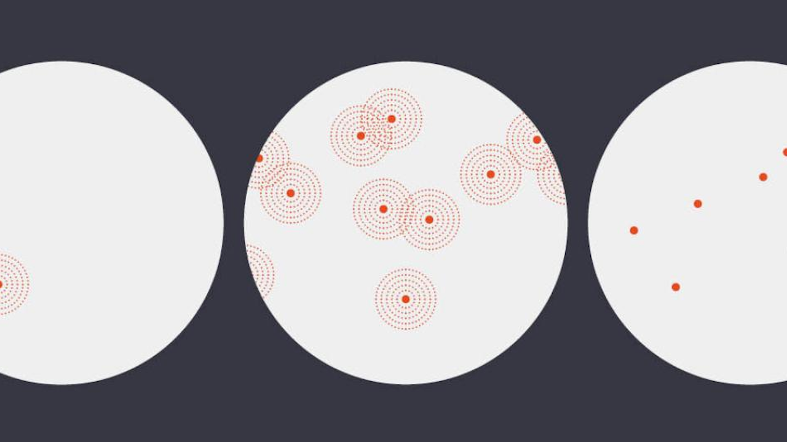

Infectious Disease
On this page, you'll find several resources including videos, podcasts, news articles, and academic papers related to infectious diseases. Each resource includes a brief summary and recommended education level to help you decide which to click on.
Videos and Podcasts
Introduction to Infectious Disease Modeling
This course offers an in-depth introduction to the principles and techniques of infectious disease modeling. It covers various modeling approaches, including deterministic and stochastic models, to understand and predict the spread of infectious diseases. The course is designed for public health professionals, researchers, and college students, aiming to equip them with the essential tools to analyze disease dynamics and inform public health interventions.
Recommended Education Level: Undergraduate +
Watch VideoCrash Course: Outbreak Science
The Outbreak Science series produced by Crash Course provides an in-depth look at the science behind outbreaks and how public health professionals respond to them. Across 15 episodes, the series covers key topics such as epidemiology, disease transmission, outbreak investigation, and control measures. Designed to be accessible and informative, it aims to educate viewers about the complexities of managing infectious disease outbreaks and the importance of public health interventions.
Recommended Education Level: High School +
Watch VideoCrash Course: How Does Disease Move?
In this episode of Crash Course Geography, the host discusses the movement of diseases and how they spread across different regions and populations. The episode explores the factors that influence disease transmission, including human behavior, environmental conditions, and global connectivity. It also discusses the role of geography in understanding and managing outbreaks, highlighting how maps and other geographic tools can help track and control the spread of infectious diseases.
Recommended Education Level: Middle School +
Watch VideoAntibiotics, Antivirals, and Vaccines
In this educational video, the hosts explain the differences between antibiotics, antivirals, and vaccines in a fun and engaging manner. The episode covers how antibiotics work to fight against bacterial infections, how antivirals help to manage viral infections, and the role of vaccines in preventing diseases by stimulating the immune system. The video aims to clarify common misconceptions and provides a clear understanding of how these medical interventions contribute to public health.
Recommended Education Level: Middle School +
Watch VideoInfectious disease epidemiology and transmission dynamics (how infections spread)

This informative video explains the basics of infectious disease epidemiology and how infections spread. It covers key ideas like the basic reproduction number (R0), ways infections are transmitted, and factors that affect the spread of diseases. With clear explanations and engaging visuals, viewers learn about the mechanisms behind disease outbreaks and the importance of public health strategies in controlling infections.
Recommended Education Level: High School +
Watch VideoKnow how to interpret an epidemic curve?

This educational video explains how to interpret an epidemic curve, a crucial tool in epidemiology for understanding the progression of disease outbreaks. It covers the different phases of an epidemic, how to read and analyze the curve, the insights the curve provides about transmission dynamics, peak infection periods, and the effectiveness of public health interventions. Clear explanations and visual aids make this complex topic accessible to a wide audience.
Recommended Education Level: 8th Grade +
Watch VideoOutbreaks - Investigation and Control

This insightful video delves into the processes involved in investigating and controlling disease outbreaks. It covers the steps epidemiologists take to identify the source of an outbreak, track its spread, and implement measures to contain it. Topics include case identification, data collection, analysis of transmission patterns, and the application of public health interventions. Through clear explanations and practical examples, viewers learn the critical methods used to manage and mitigate outbreaks.
Recommended Education Level: 8th Grade +
Watch VideoDisease Origins & Transmission

This PBS video explores the origins and transmission of diseases, shedding light on how infectious agents emerge and spread through populations. The program delves into the factors that contribute to disease outbreaks, including environmental changes, human behavior, and global travel. Expert interviews and scientific insights provide a comprehensive understanding of how diseases originate and the mechanisms behind their transmission, highlighting the importance of surveillance and public health measures in preventing and controlling outbreaks.
Recommended Education Level: Middle School +
Watch VideoThe Future of Infectious Diseases
In this TEDx talk, Paul Cosford discusses the future of infectious diseases and the challenges and opportunities that lie ahead in combating them. He explores emerging threats, the impact of globalization and climate change on disease spread, and the importance of global cooperation and innovation in public health. Cosford emphasizes the need for preparedness, robust healthcare systems, and continuous research to effectively manage and prevent future infectious disease outbreaks.
Recommended Education Level: High School +
Watch VideoPathogens in Pop Culture: Contagion, Outbreak, and Pathogen Response

In this episode of the “Transmission Interrupted” podcast series, the hosts explore the depiction of pathogens in popular films such as “Contagion” and “Outbreak.” They discuss how these movies represent pathogen response and the impact of such portrayals on public understanding of infectious diseases and emergency preparedness. The episode features expert insights into the accuracy of these cinematic depictions and their influence on public health awareness.
Recommended Education Level: 10th Grade +
Listen to PodcastOther SEPA (Science Education Partnership Award) Projects
The Great Diseases - Infectious Diseases
"Infectious Diseases" is a unit within "The Great Diseases" curriculum module offered by Tufts University, and is aimed at teaching middle and high school students about the complexities of infectious diseases. This module covers the biology of pathogens, the mechanisms of disease transmission, the body’s defense mechanisms, and public health strategies to control infectious diseases.
Recommended Education Level: Middle School +
Visit SiteIt's Contagious! Promoting the Biomedical Workforce Pipeline through Infectious Diseases
“It's Contagious! Promoting the Biomedical Workforce Pipeline through Infectious Diseases” is an educational resource that aims to engage students in learning about infectious diseases and to inspire interest in biomedical careers. The curriculum includes interactive lessons and activities designed to enhance understanding of the science behind infectious diseases and the importance of the biomedical workforce.
Recommended Education Level: Middle School +
Visit SiteEpidemiology and the Energy Balance Equation

This educational resource offers a comprehensive curriculum focused on teaching students the principles of epidemiology, specifically in relation to energy balance, nutrition, and physical activity. It aims to deepen students' understanding of how epidemiological methods are applied to investigate the connections between lifestyle factors and health outcomes.
Recommended Education Level: Middle School +
Visit SiteArticles
Most Common Infectious Diseases in the U.S.

This informative slideshow from WebMD provides an overview of the most common infectious diseases in the United States. The presentation covers a range of diseases, from the flu to more serious infections like tuberculosis. Each slide offers images of symptoms and key information about transmission, prevention, and treatment. The slideshow presents information in a concise manner to help viewers understand how these diseases impact public health and what measures can be taken to reduce their spread.
Recommended Education Level: Middle School +
Warning: Images depicting symptoms of the infectious diseases are included. May be considered graphic and upsetting to some users.
Read ArticleDisease Outbreaks
This comprehensive page from the World Health Organization (WHO) focuses on disease outbreaks and their impact on global health. It provides detailed information on current and past outbreaks, the factors that contribute to their spread, and the strategies used to manage and control them. The page also highlights the role of WHO in coordinating international responses, promoting preparedness, and supporting countries in their efforts to mitigate the effects of outbreaks.
Recommended Education Level: Middle School +
Read ArticleMethods of Disease Transmission

This educational infographic shows how diseases spread. It explains different ways infections are passed on, like through direct contact, the air, and by insects. The graphic gives clear examples and explanations, helping readers understand how diseases move from one person to another and how to prevent them.
Recommended Education Level: 5th Grade +
Read InfographicWhat You Need to Know About Infectious Disease
This article explores how infections happen, explaining how pathogens invade the body, grow, and cause illness. The author talks about the roles of bacteria, viruses, fungi, and parasites in infections and describes how the body’s immune system responds to these invaders. This page gives a clear and engaging overview of the biological and physical aspects of infection, making complex ideas easy to understand for readers.
Recommended Education Level: 7th Grade +
Read ArticleEpidemic, Endemic, Pandemic: What are the Differences?
This article explains the key differences between epidemics, endemics, and pandemics. It provides clear definitions and examples of each term, illustrating how diseases can vary in scope and impact. It also discusses the factors that influence the classification of disease outbreaks and the public health responses required to manage them.
Recommended Education Level: Middle School +
Read ArticleAcademic Papers
A systems approach to infectious disease
This article highlights how systems biology can enhance our understanding of infectious diseases. By integrating various data sources, the authors demonstrate how this approach can uncover pathogen-host interactions, identify new drug targets, and improve disease prediction and treatment strategies.
Recommended Education Level: Undergraduate +
Read PaperPrinciples of Infectious Diseases: Transmission, Diagnosis, Prevention, and Control
This article provides an in-depth look at the key principles of infectious diseases, covering how they spread, how they are diagnosed, and the methods used to prevent and control them. The author explains the ways infectious agents move from one host to another, the techniques used to detect infections, and the strategies to stop outbreaks. This article is a valuable resource for researchers, healthcare professionals, and students interested in infectious diseases and public health.
Recommended Education Level: High School +
Read PaperInfectious Diseases in Cinema: Virus Hunters and Killer Microbes
This article examines the portrayal of infectious diseases in cinema, focusing on how movies depict virus hunters and killer microbes. The authors analyze various films to explore how these representations influence public perception and understanding of infectious diseases. The article discusses the accuracy of these portrayals, their impact on public health awareness, and the role of cinema in educating and engaging audiences about real-life epidemiological challenges.
Recommended Education Level: High School +
Read Paper